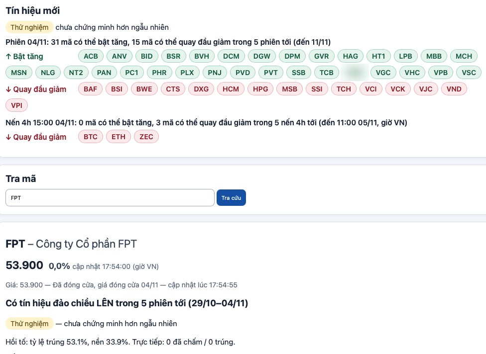
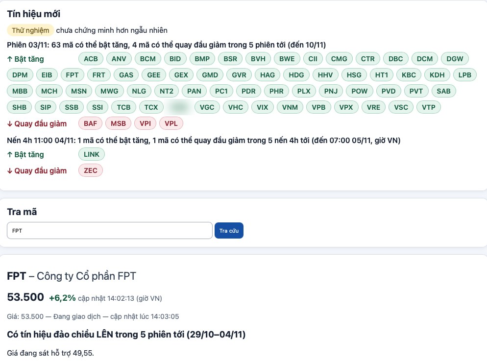

1. Nhu cầu
Ai chơi chứng khoán hoặc crypto cũng gặp cùng một câu hỏi: lúc nào thì giá sắp quay đầu, nên mua hay nên bán, mã nào đang có biến động gì và trong khoảng thời gian nào. Mình cũng vậy, đọc nhiều kênh phím chỉ báo mua bán nhưng không có cách nào biết họ nói trúng bao nhiêu, và mình muốn một thứ đơn giản hơn: gõ đúng một mã là biết ngay có tín hiệu đảo chiều sắp tới hay không. Từ nhu cầu đó, chúng mình bắt tay xây công cụ Điểm đảo chiều.
2. Xây dựng dựa trên gì, chọn mẫu ra sao
Trước khi làm, chúng mình rà soát các kênh phím chỉ báo để xem họ nói trúng bao nhiêu, rồi xem liệu những ngày có sự kiện lớn như đáo hạn hợp đồng phái sinh, ngày Cục Dự trữ Liên bang Mỹ họp, hay ngày công bố số liệu lạm phát Mỹ có khiến giá đổi chiều rõ rệt hơn ngày thường không. Cả hai việc đều chưa cho ra bằng chứng chắc chắn, nên chúng mình tự dựng quy tắc báo tín hiệu đảo chiều từ dữ liệu giá thật.
Chúng mình dùng dữ liệu giá lịch sử của cổ phiếu Việt Nam từ năm 2015 và crypto từ năm 2019, kéo tới hết năm 2025, rồi chia ra như một đề thi: phần cũ dùng để xây quy tắc, phần mới hơn giữ riêng để chấm điểm thật, chỉ mở đúng một lần.
Phạm vi theo dõi là một trăm mã trong nhóm vốn hoá lớn của sàn chứng khoán Việt Nam, đã được đối chiếu với văn bản công bố chính thức của sở giao dịch và khớp đúng toàn bộ. Bên cạnh đó là mười loại tiền số có vốn hoá lớn nhất, sau khi loại bỏ các loại có giá trị gần như cố định. Với cổ phiếu, công cụ nhìn về phía trước năm phiên giao dịch; với crypto, công cụ nhìn về phía trước năm khung giờ bốn tiếng.
Phần mà chúng mình muốn các bạn thấy rõ nhất là hình hài sản phẩm thật sự trông như thế nào. Trên trang có một ô gọi là "Tín hiệu mới", hiện ra một câu rất gọn kiểu như: trong phiên hôm nay, có bao nhiêu mã có thể bật tăng và bao nhiêu mã có thể quay đầu giảm trong năm phiên tới. Bấm vào từng mã trong ô đó sẽ mở ra chi tiết của riêng mã ấy. Ngoài ra còn có một ô tra mã riêng: gõ đúng mã mình quan tâm vào, trang sẽ hiện giá hiện tại trong phiên, một câu kết luận ngắn, và một đồ thị dạng nến có đánh dấu rõ những lần công cụ đã báo tín hiệu trước đây là đúng hay sai, kèm vùng hỗ trợ và kháng cự để dễ nhìn tổng thể. Có thêm mười lăm chỉ báo quen thuộc để các bạn tham khảo thêm góc nhìn. Với crypto, tín hiệu được cập nhật sau mỗi nến 4 giờ.

3. Quy trình xây dựng, kiểm thử
Mỗi lần làm, chúng mình đi theo đúng năm bước: viết đặc tả trước, Rì viu duyệt đặc tả, Kiu-ây viết bộ bài kiểm giấu kín để người code không nhìn thấy trước, Đép code, rồi Rì viu chấm và còn chủ động cài lỗi cố ý vào code để xem bộ bài kiểm có bắt được không. Nếu chưa đạt thì quay lại làm tiếp, tối đa ba vòng mỗi lần.
Chúng mình đã làm hai bản. Bản một có rất nhiều bảng thống kê, mình dùng thử thấy không hợp với cách làm việc thực tế, nên chúng mình đổi hẳn sang bản hai là tra mã trực tiếp như đã kể ở trên. Đặc tả của bản một phải viết lại năm lần mới ổn, đặc tả bản hai qua hơn mười lần duyệt mới được chấp nhận, và hai bản cộng lại có hơn năm trăm bài kiểm để chắc chắn code chạy đúng.
Có một lần chúng mình phải huỷ cả kết quả đã chấm. Lần đó kết quả ra khá đẹp, nhưng Rì viu phát hiện quy tắc đã vô tình "nhìn trộm" một phần dữ liệu thuộc phần đề cuối lẽ ra phải giữ kín. Chúng mình huỷ toàn bộ, ghi lại sự cố để rút kinh nghiệm, và đổi luật: chỉ công nhận một mã là đáng tin khi mã đó đã có đủ số lượng tín hiệu thật tích lũy tính từ ngày công cụ bắt đầu chạy thật.
Mỗi tín hiệu thật mà công cụ đưa ra đều được ghi vào nhật ký có khoá thời gian, không thể quay lại sửa cho đẹp số liệu. Từ ngày 28/10 đến sáng ngày 4/11, công cụ đã ghi được 396 tín hiệu thật như vậy.

4. Áp dụng AI vào làm phần mềm
Toàn bộ sản phẩm này do một đội bot AI chạy trên Discord làm ra, mình chỉ đặt nhu cầu và duyệt từng bước. Mỗi bot có vai riêng: Bà Cô điều phối và viết đặc tả, Xợt đi nghiên cứu và gom dữ liệu, Đép code và giao phần việc nặng cho một AI lập trình riêng, Kiu-ây viết bài kiểm giấu kín, Rì viu chấm sản phẩm — bài do model của một hãng làm thì phải để model của hãng khác chấm, và phải có hai phiếu đạt mới được tính là đạt, bot Designer thì lo phần giao diện.
Bài học rút ra sau cả quá trình này: AI làm việc rất nhanh, nhưng phải có một bên chấm độc lập và một người ra quyết định cuối cùng, vì AI để tự khen chính mình thì rất dễ nói sai.
5. Khuyến cáo
Công cụ này vẫn đang ở giai đoạn thử nghiệm. Mọi tín hiệu đưa ra đều mang nhãn rõ ràng: thử nghiệm, chưa chứng minh là tốt hơn đoán ngẫu nhiên. Hiện chưa có mã nào tích lũy đủ tín hiệu thật để được công nhận là đáng tin, và trang hiện chỉ chạy nội bộ, chưa mở rộng cho ai khác dùng. Đây không phải là khuyến nghị đầu tư, các bạn tự chịu trách nhiệm với quyết định của mình. Cách tính toán chi tiết bên trong, ai quan tâm thì cứ inbox cho chúng mình.
Nếu các bạn muốn theo dõi các bài kiểu này, để lại Zalo cho chúng mình, follow Threads @aiforfun2810, và đọc thêm hướng dẫn tự dựng đội AI chi phí thấp tại: https://linhnlm2810.github.io/lazy-ai-guide/doi-ai-50k/
Cập nhật 04/11/2026.